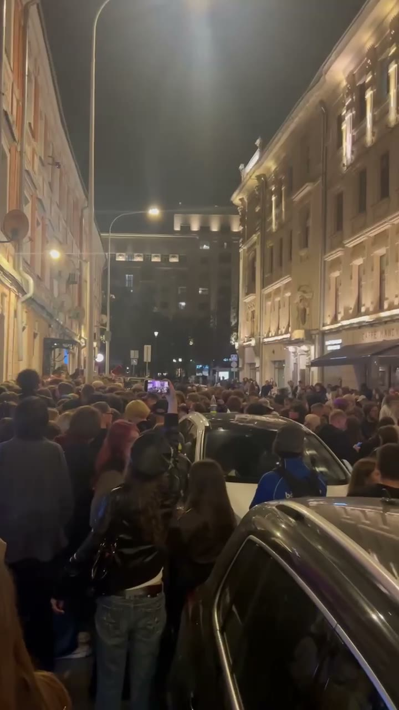

CHINATOWN.site — гид и архив центра Москвы
Куда пойти в центре Москвы, кроме бара, и что здесь происходило, пока сцена ещё жива.
Читать первый материалО нас
Центр Москвы — больше, чем бар
Обычно на Китай-городе всё решает один вопрос: куда пойдём пить? И все идут в знакомые места.
Мы отвечаем на другие вопросы. Где позавтракать после тусы, выпить кофе с утра, проявить плёнку, найти аптеку или место, о котором вы ещё не слышали. Чтобы сегодня вечером пойти туда, куда раньше не ходили.
Что внутри
Гид по местам
Кофейни, завтраки, площадки и культурные места центра. Каждое место отмечено на карте и связано со статьёй.
На любую тусу есть ответ
Теги: дневное или ночное, тусовочное или спокойное, безопасно или можно нарваться. Выбирайте под настроение.
Разборы и истории
Треки строка за строкой, артисты, концерты и события, которые стали частью сцены.
Почему сейчас
Пока это ещё можно застать
Нефор-культура меняется на глазах: артистам всё сложнее выступать, на Китай-городе всё больше полиции, места и люди пропадают. CHINATOWN собирает эту эпоху в один архив, чтобы от неё осталось больше, чем удалённые треки.
≈100 материаловвыйдет за первые три месяца

Первый материал
madk1d: слишком громко, чтобы было всё равно
Читать статью
Команда
Лёша
дизайн и код
Лиза
дизайн и коммуникации
Ксюша
код